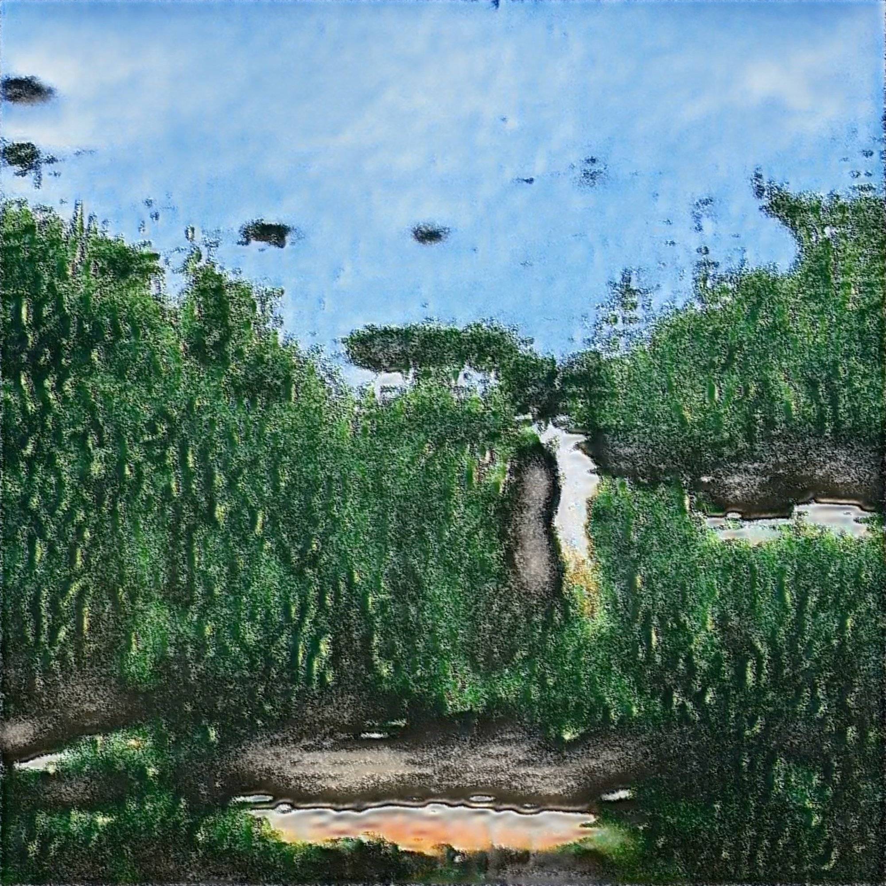
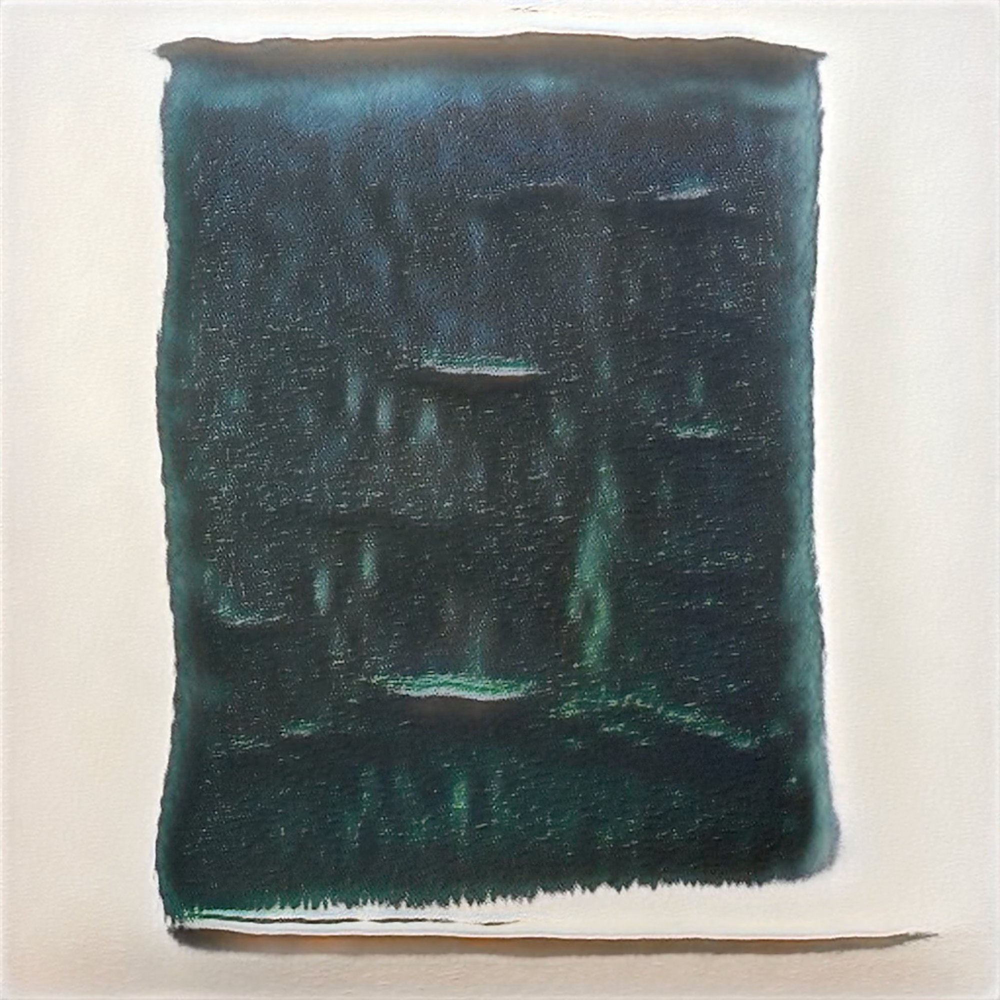
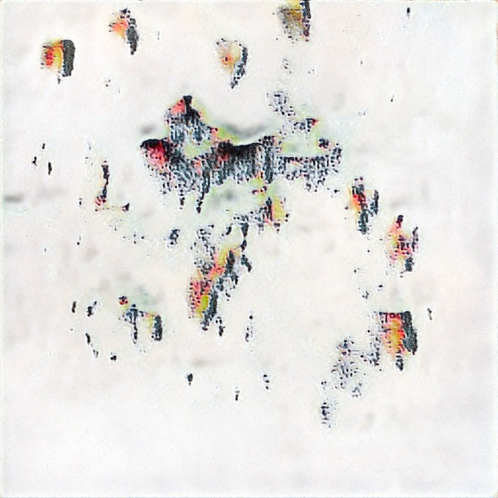
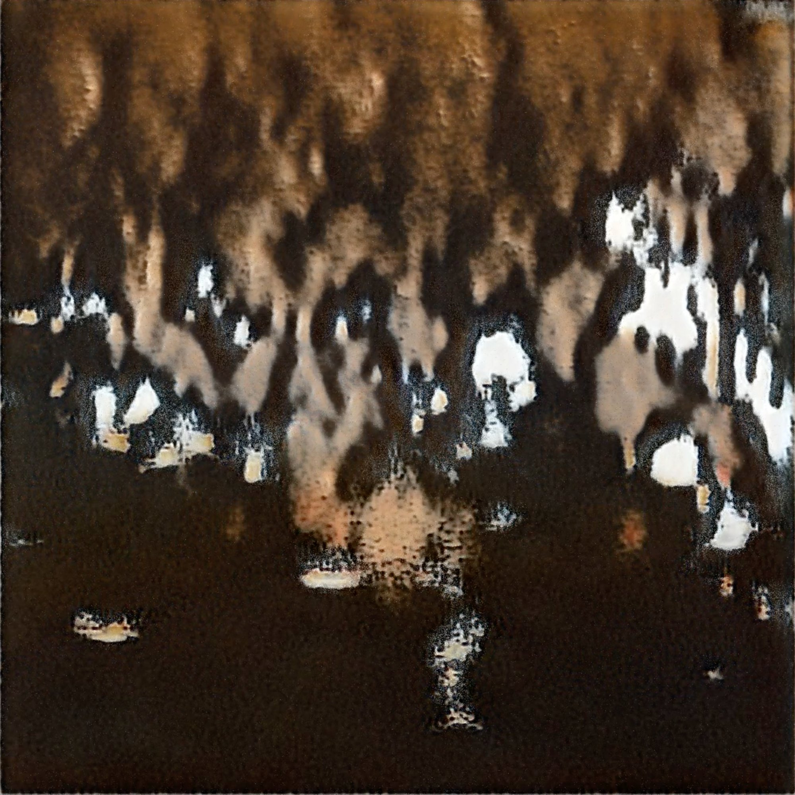

CINEML
CineML: Paris employs machine learning to investigate the relationship between filming locations and real-life landmarks, and how cinematic tourism informs the way that people experience and remember the places they visit. I trained several generative adversarial network (GAN) models to analyze public Instagram images from the filming locations of Richard Linklater's Before Sunset (2004). The GAN models output a series of computer-generated moving images based on the collective memories of Paris. The reconstructed landscape offers a nuanced and data-driven perspective that immerses viewers in a captivating exploration of space and memory.
STILLS



